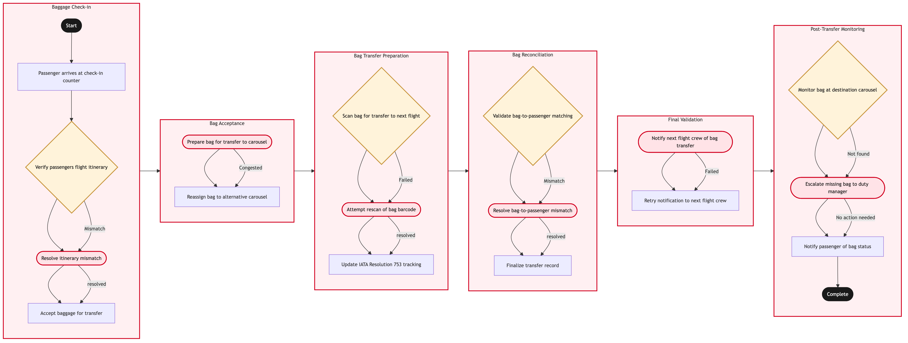

Updated 2026-08-21
Transfer Baggage Handling at YYZ
Process flow
Click to zoom

Process steps
▼
Phase 1 — Baggage Check-in
4 steps
| Step | Activity | Role | System | Input | Output | KPI | Dec | Exc | Pain point |
|---|---|---|---|---|---|---|---|---|---|
| 1.1 | Passenger arrives at check-in counter | Air Canada Baggage Agent | Amadeus Altea DCSA | Passenger details and baggage information | Check-in confirmation | 95% successful check-ins within 5 minutes | N | N | Manual fallback required during Amadeus outage |
| 1.2 | Verify passenger's flight itinerary | Air Canada Baggage Agent | Amadeus Altea DCSA | Passenger details | Confirmed flight information | 98% accurate itinerary verification | Y | N | Misrouting errors due to incorrect input |
| 1.3 | Resolve itinerary mismatch | Air Canada Baggage Agent | Amadeus Altea DCSA | Passenger details and corrected flight info | Updated itinerary confirmation | 90% resolution within 2 minutes | N | Y | Complex booking scenarios leading to delays |
| 1.4 | Accept baggage for transfer | Air Canada Baggage Agent | Amadeus Altea DCSA | Bag details and passenger confirmation | Bag acceptance receipt | 97% bags accepted correctly | N | N | Incorrect bag weight causing delays |
▼
Phase 2 — Bag Acceptance
2 steps
| Step | Activity | Role | System | Input | Output | KPI | Dec | Exc | Pain point |
|---|---|---|---|---|---|---|---|---|---|
| 2.1 | Prepare bag for transfer to carousel | Air Canada Ground Operations Control Duty Manager | CUPPSC | Bag acceptance receipt and transfer instructions | Carousel assignment | 95% bags assigned within 3 minutes | N | Y | Carousel congestion leading to delays |
| 2.2 | Reassign bag to alternative carousel | Air Canada Ground Operations Control Duty Manager | CUPPSC | Bag details and new carousel info | Updated carousel assignment | 85% successful reassignments within 1 minute | N | N | Limited carousel availability |
▼
Phase 3 — Bag Transfer Preparation
3 steps
| Step | Activity | Role | System | Input | Output | KPI | Dec | Exc | Pain point |
|---|---|---|---|---|---|---|---|---|---|
| 3.1 | Scan bag for transfer to next flight | Air Canada Baggage Reconciliation Agent | Baggage Reconciliation SystemC | Bag barcode and passenger info | Transfer confirmation | 98% successful scans within 2 minutes | Y | N | Barcode scanner malfunctions causing delays |
| 3.2 | Attempt rescan of bag barcode | Air Canada Baggage Reconciliation Agent | Baggage Reconciliation SystemC | Bag barcode and passenger info | Rescanned transfer confirmation | 85% successful rescans within 1 minute | N | Y | Persistent scanner issues leading to manual checks |
| 3.3 | Update IATA Resolution 753 tracking | Air Canada Baggage Reconciliation Agent | Baggage Reconciliation SystemC | Bag details and transfer info | Updated tracking record | 99% accurate tracking updates | N | N | System downtime affecting tracking accuracy |
▼
Phase 4 — Bag Reconciliation
3 steps
| Step | Activity | Role | System | Input | Output | KPI | Dec | Exc | Pain point |
|---|---|---|---|---|---|---|---|---|---|
| 4.1 | Validate bag-to-passenger matching | Air Canada Baggage Reconciliation Agent | Baggage Reconciliation SystemC | Transfer confirmation and passenger info | Validation report | 97% successful validations within 3 minutes | Y | N | Data entry errors causing mismatches |
| 4.2 | Resolve bag-to-passenger mismatch | Air Canada Baggage Reconciliation Agent | Baggage Reconciliation SystemC | Bag details and corrected passenger info | Corrected validation report | 90% resolution within 2 minutes | N | Y | Complex booking scenarios leading to delays |
| 4.3 | Finalize transfer record | Air Canada Baggage Reconciliation Agent | Baggage Reconciliation SystemC | Validation report and passenger info | Finalized transfer record | 95% successful finalizations within 1 minute | N | N | System performance issues affecting finalization speed |
▼
Phase 5 — Final Validation
2 steps
| Step | Activity | Role | System | Input | Output | KPI | Dec | Exc | Pain point |
|---|---|---|---|---|---|---|---|---|---|
| 5.1 | Notify next flight crew of bag transfer | Air Canada Ground Operations Control Duty Manager | SITA WorldTracerB | Finalized transfer record and flight details | Notification confirmation | 98% successful notifications within 2 minutes | N | Y | System connectivity issues affecting notifications |
| 5.2 | Retry notification to next flight crew | Air Canada Ground Operations Control Duty Manager | SITA WorldTracerB | Finalized transfer record and flight details | Retried notification confirmation | 85% successful retries within 1 minute | N | N | Persistent connectivity issues leading to manual notifications |
▼
Phase 6 — Post-Transfer Monitoring
3 steps
| Step | Activity | Role | System | Input | Output | KPI | Dec | Exc | Pain point |
|---|---|---|---|---|---|---|---|---|---|
| 6.1 | Monitor bag at destination carousel | Air Canada Baggage Reconciliation Agent | Baggage Reconciliation SystemC | Finalized transfer record and passenger info | Bag status update | 95% bags monitored within 5 minutes of landing | Y | N | System lag affecting monitoring speed |
| 6.2 | Escalate missing bag to duty manager | Air Canada Baggage Reconciliation Agent | Baggage Reconciliation SystemC | Finalized transfer record and passenger info | Escalation ticket | 80% escalations logged within 1 minute | N | Y | High volume of lost bags during peak times |
| 6.3 | Notify passenger of bag status | Air Canada Customer Service Agent | CUPPSC | Finalized transfer record and passenger info | Passenger notification | 98% notifications sent within 2 minutes | N | N | System downtime affecting notification speed |
Swim lanes
Air Canada Baggage Agent1.1 1.2 1.3 1.4
Air Canada Ground Operations Control Duty Manager2.1 2.2 5.1 5.2
Air Canada Baggage Reconciliation Agent3.1 3.2 3.3 4.1 4.2 4.3 6.1 6.2
Air Canada Customer Service Agent6.3
Systems touched
Amadeus Altea DCSACUPPSCBaggage Reconciliation SystemCSITA WorldTracerB
Key performance indicators
- 95% successful check-ins within 5 minutes
- 98% accurate itinerary verification
- 97% bags accepted correctly
- 95% bags assigned within 3 minutes
- 98% successful scans within 2 minutes
Risks and control points
- Amadeus Altea DCS outage leading to manual fallback procedures
- Barcode scanner malfunctions causing delays
- System downtime affecting tracking accuracy
- Complex booking scenarios leading to delays
- Persistent connectivity issues affecting notifications
Air Canada Process Wiki — process and systems reference compiled from public sources
for IT Application Management and User Support pre-sales discovery.
Built 2026-08-21. Every system carries an evidence tier: tier C is an industry pattern and tier U is an open
question, and neither should be asserted as fact about Air Canada without confirmation in discovery.
Not affiliated with or endorsed by Air Canada. Air Canada, Aeroplan and Altitude are trademarks of Air Canada.